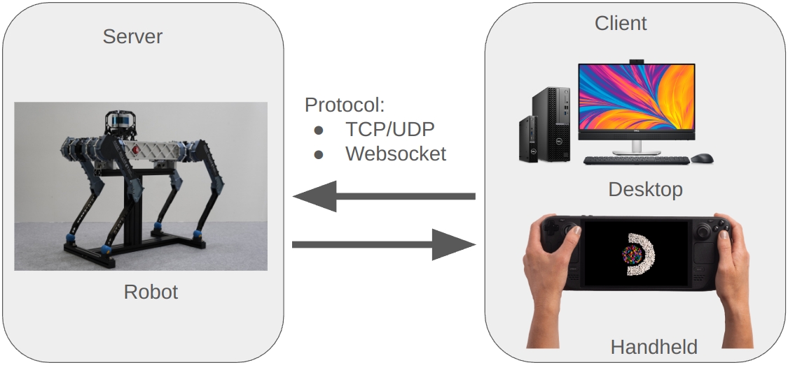
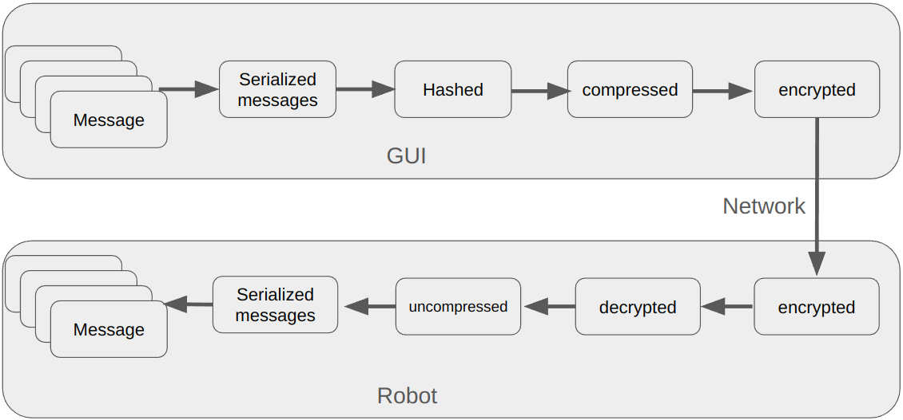

Raisin Network
Introduction
{kind=link}
Raisin Network is a package for transferring messages. Messages can be exchanged between different machines, different processes, or even different objects within the same process.
Raisin Network supports both local network connections (TCP/UDP) and remote network connections (WebSocket++). If a robot has a cellular network (LTE or 5G) with a static IP, you can connect to the robot using Raisin Network.
The Raisin Network API is highly inspired by ROS2. If you are familiar with ROS2, you will find Raisin Network intuitive, requiring minimal additional learning.
{kind=link}
Raisin Network supports both compression and encryption. For instance, video data is compressed using FFmpeg.
Threadpool
To understand Raisin Network, it is essential to first understand Raisin Threadpool.
Raisin Threadpool preallocates threads and allows users to register tasks.
If multiple tasks are registered within the same thread, they will not be executed concurrently.
This minimizes the need for mutexes, reducing unnecessary wait times.
Additionally, since mutexes are often overlooked, using a thread pool is a safer alternative to individually created std::thread objects.
Registered tasks fall into two categories: periodic and event-based. Periodic tasks run at a fixed frequency, while event-based tasks execute only when triggered. Raisin Network manages message handling through Raisin Threadpool. Further details are provided in the following sections.
When creating an instance of raisin::Network, you can specify the thread group configuration of a type std::vector<std::vector<std::string>>.
The outer vector represents thread pools, each containing multiple thread groups.
When creating a task, you can assign it to a specific thread group, ensuring execution within the corresponding thread pool.
Remotes and Connections
A key difference between ROS2 and Raisin Network is that Raisin Network requires an explicit connection to communicate. This is very different from ROS2 which broadcasts messages to all machines within the same local network.
A server can be started in any raisin::Network instance using the launchServer() method.
By default, this creates a TCP server, but a webSocket server can also be launched by specifying the type as launchServer(Remote::NetworkType::WEBSOCKET).
Both TCP and WebSocket servers can be initiated from the same raisin::Network instance.
In fact, we recommend maintaining a single instance of raisin::Network per process.
Once the server is created, it can be discovered from another raisin::Network instance using the getAllConnections() method.
To connect to a TCP server, use connect(const std::string & id).
To connect to a WebSocket server, use connect(const std::string & ip, int port).
Note: The port number for the WebSocket server is currently fixed at 9002.
Publisher and Subscriber
Publishers are designed to deliver messages at a consistent rate. Thus they typically operate in a timed loop, implemented as a periodic task in the thread pool. However, to publish messages periodically, you must explicitly create a timed loop. Check out the example code in the below example.
Within a single Raisin Network instance, publishers must have unique names.
Subscribers listen to designated publishers and execute a callback whenever a message is received. This process is managed through an automatically created event task. When a message arrives from the publisher, the event task associated with the subscriber is triggered, and the corresponding callback is executed.
Message types are specified in .msg files. Since Raisin Network strictly adheres to ROS2 conventions, we recommend referring to the ROS2 documentation for details (https://design.ros2.org/articles/legacy_interface_definition.html).
.msg files in a Raisin package are converted into header files located at <raisin_package_name>/msg/<msg_file_name>.hpp.
The header file names follow the snake_case convention, consistent with ROS2 standards.
The example code is available in https://github.com/railabatkaist/raisin_examples.git.
Write the Publihser node
The following is a basic example of publisher
//
// Created by munjuhyeok on 25. 7. 29.
//
// raisin inclusion
#include "raisin_network/node.hpp"
#include "raisin_network/raisin.hpp"
// message inclusion
#include "std_msgs/msg/string.hpp"
// std inclusion
#include <string>
using namespace raisin;
class EmptyPub : public Node{
public:
EmptyPub(std::shared_ptr<Network> network) :
Node(network){
// create publisher
stringPublisher_ = createPublisher<std_msgs::msg::String>("string_message");
createTimedLoop("string_message", [this](){
std_msgs::msg::String msg;
msg.data = "raisin publisher!";
stringPublisher_->publish(msg);
}, 1., "pub");
};
~EmptyPub() {
/// YOU MUST CALL THIS METHOD IN ALL NODES
cleanupResources();
}
private:
Publisher<std_msgs::msg::String>::SharedPtr stringPublisher_;
};
int main() {
raisinInit();
std::vector<std::vector<std::string>> thread_spec = {{std::string("pub")}};
auto network = std::make_shared<Network>("publisher", "tutorial", thread_spec);
network->launchServer(Remote::NetworkType::TCP);
EmptyPub ps(network);
std::this_thread::sleep_for(std::chrono::seconds(20));
return 0;
}
node.hpp and raisin.hpp include the core components required for the network and communication nodes. To enable communication, the data type being transmitted must be consistent. In this example, a string type is used. Additionally, the standard library is included to use std::string
These lines represent the node’s dependencies. Recall that dependencies have to be added to CMakeLists.txt, which you’ll do in the next section.
The next line creates the node class by inheriting from Node. Every this in the code is referring to the node.
The EmptyPub class takes a Network object as a member variable. As you know, it inherits from the Node class. Once the node is constructed with a name, a parameter container, and the network, it gains access to internal methods like createPublisher and createTimedLoop. These methods are responsible for creating a publisher and executing periodic loop operations, respectively.
The createPublisher function communicates using the String type and is named “string_message”, allowing it to communicate with any subscriber that uses the same type and topic name. In addition, a periodic loop is created using createTimedLoop. Although it’s implemented using a lambda function, how the callback is handled is left to the developer’s discretion.
The parameters of createTimedLoop are as follows: the taskName sets the name of the loop, a callback function defines the operation to be executed, the frequency is specified in hertz, and a thread group can be assigned.
This thread group refers to a group within the thread pool. Each group maintains an independent queue, which helps minimize race conditions and reduces latency through workload separation.
To use it, simply specify the thread that the communication node should occupy. If that thread exists in the thread pool, it will be assigned accordingly.
Nodes must call the cleanup method upon destruction to properly release allocated resources. Failing to do so may lead to segmentation faults. This method ensures that all tasks registered with the thread pool are correctly deregistered before the node’s internal resources are deallocated.
stringPublisher_ is declared according to the appropriate message type.
first, raisinInit is should be done at the start of the main function. thread_spec contains the list of worker threads. Currently, it includes only one for the publisher, but more workers can be added as needed. The Network class takes an ID, device type, and worker list as arguments. Once instantiated, the Network object connects to external networks via TCP using the launchServer method. Upon creation, it begins executing its loop and starts publishing messages.
Write the Subscriber node
// raisin inclusion
#include "raisin_network/node.hpp"
#include "raisin_network/raisin.hpp"
// message inclusion
#include "std_msgs/msg/string.hpp"
using namespace std::chrono_literals;
using namespace raisin;
class EmptySub : public Node{
public:
EmptySub(std::shared_ptr<Network> network, std::shared_ptr<Remote::Connection> connection) :
Node(network) {
// create publisher
stringSubscriber_ = createSubscriber<std_msgs::msg::String>("string_message", connection,
std::bind(&EmptySub::messageCallback, this, std::placeholders::_1), "sub");
};
~EmptySub() {
/// YOU MUST CALL THIS METHOD IN ALL NODES
cleanupResources();
}
void messageCallback(std_msgs::msg::String::SharedPtr message) {
std::cout<<"message: "<<message->data<<std::endl;
}
private:
Subscriber<std_msgs::msg::String>::SharedPtr stringSubscriber_;
};
int main() {
raisinInit();
std::vector<std::vector<std::string>> thread_spec = {{std::string("sub")}};
auto network = std::make_shared<Network>("subscriber", "tutorial", thread_spec);
std::this_thread::sleep_for(std::chrono::seconds(2));
auto con = network->connect("publisher");
EmptySub es(network, con);
std::this_thread::sleep_for(std::chrono::seconds(20));
return 0;
}
It follows the same structure as the publisher. The string.hpp header is included to subscribe to messages of type String.
The class inherits from Node and uses the createSubscriber function provided by it. You can see that it uses the same message type and topic name as the publisher. The messageCallback function is used as the callback to handle incoming messages and print the result.
The main function creates a thread worker named sub and initializes a network with it. It then connects to an external network using the connect function. Although the code specifies the network name “publisher”, the actual connection is made via the local IP address, not the network ID.
To connect using an ID, a fully qualified name must be specified—such as publisher-16442512. This can be seen more clearly when using the CLI.
CMakeLists.txt
cmake_minimum_required(VERSION 3.5)
## write your package name
project(publisher_subscriber_example)
set(CMAKE_PREFIX_PATH $ENV{RAISIN_WS}/install)
## added your dependencies here
find_package(raisin_network REQUIRED)
add_executable(publisher src/publisher.cpp)
target_link_libraries(publisher raisin_network)
target_include_directories(publisher PRIVATE $ENV{RAISIN_WS}/install)
add_executable(subscriber src/subscriber.cpp)
target_link_libraries(subscriber raisin_network)
target_include_directories(subscriber PRIVATE $ENV{RAISIN_WS}/install)
project: Defines the name of the project.
find_package: Finds and includes required dependency packages.
set: Set the ENV{RAISIN_WS} environment variable. ex)
export RAISIN_WS=/home/user/raisin_mastertarget_include_directories: Specifies include paths for both build-time and install-time.
add_executable: Creates an executable node.
target_link_libraries: Links the executable to the shared library.
This CMakeLists.txt follows a standard build structure and does not significantly differ from general CMake configurations.
Build & Run
build
cd publisher_subscriber_example
mkdir build && cd build
cmake .. -G Ninja -DCMAKE_BUILD_TYPE=Release
ninja -j8
run subscriber
source $RAISIN_WS/ld_prefix_path.sh
./empty_subscriber
run publisher
source $RAISIN_WS/ld_prefix_path.sh
./empty_publisher
result
message: raisin publisher!
message: raisin publisher!
Service and Clients
Services facilitate infrequent communication between nodes.
A client sends a Request to a service, which executes a callback and responds with a Response.
Services are automatically registered as event tasks.
Like publishers, services must have unique names within a raisin::Network instance.
Clients can optionally include a callback function.
If not, they should use the std::shared_future returned by the service.
Properly managing services can be complex, so we recommend referring to the example code below.
The example code is available in https://github.com/railabatkaist/raisin_examples.git.
Write the Service node
//
// Created by munjuhyeok on 25. 7. 29.
// raisin inclusion
#include "raisin_network/node.hpp"
#include "raisin_network/raisin.hpp"
// message inclusion
#include "raisin_interfaces/srv/string.hpp"
// std inclusion
#include <string>
using namespace raisin;
class EmptySerivce : public Node{
public:
EmptySerivce(std::shared_ptr<Network> network) :
Node(network) {
// create Service
stringService_ = createService<raisin_interfaces::srv::String>("string_service",
std::bind(&EmptySerivce::responseCallback, this, std::placeholders::_1, std::placeholders::_2), "service");
};
~EmptySerivce() {
/// YOU MUST CALL THIS METHOD IN ALL NODES
cleanupResources();
}
void responseCallback(raisin_interfaces::srv::String::Request::SharedPtr request,
raisin_interfaces::srv::String::Response::SharedPtr response) {
response->success = true;
response->message = request->data + ": response";
}
private:
Service<raisin_interfaces::srv::String>::SharedPtr stringService_;
};
int main() {
raisinInit();
std::vector<std::vector<std::string>> thread_spec = {{std::string("service")}};
auto network = std::make_shared<Network>("service", "tutorial", thread_spec);
network->launchServer(Remote::NetworkType::TCP);
EmptySerivce es(network);
std::this_thread::sleep_for(std::chrono::seconds(20));
return 0;
}
The service header is similar to those used in pub/sub. The main difference is that the message type is imported from raisin_interfaces. This module contains custom message types defined by Raisin. While topic-based types like string.hpp are provided by std_msgs, the string.hpp for service types must be imported from raisin_interfaces.
By inheriting from Node, the class is able to use the createService method. This allows it to handle requests sent from a client with the same service type and name. When a request is received, it is passed to the responseCallback function, which constructs and returns a response containing a success flag and a message.
Open the TCP server.
Write the Client node
// raisin inclusion
#include "raisin_network/node.hpp"
#include "raisin_network/raisin.hpp"
// message inclusion
#include "raisin_interfaces/srv/string.hpp"
using namespace std::chrono_literals;
using namespace raisin;
class EmptyClient : public Node{
public:
EmptyClient(std::shared_ptr<Network> network, std::shared_ptr<Remote::Connection> connection) :
Node(network) {
// create Service
stringClient_ = createClient<raisin_interfaces::srv::String>("string_service", connection, "client");
createTimedLoop("request_repeat", [this](){
if (stringClient_ && stringClient_->isServiceAvailable()) {
if (!future_.valid()) {
auto req = std::make_shared<raisin_interfaces::srv::String::Request>();
req->data = "request";
future_ = stringClient_->asyncSendRequest(req);
std::cout << "sent request " << std::endl;
}
if (future_.valid() && future_.wait_for(0s) == std::future_status::ready) {
auto response = future_.get();
future_ = {};
std::cout << "message " << response->message << std::endl;
}
}
}
, 1.);
};
~EmptyClient() {
/// YOU MUST CALL THIS METHOD IN ALL NODES
cleanupResources();
}
void responseCallback(raisin_interfaces::srv::String::Response::SharedPtr response) {
std::cout<<"response: "<<response->message<<std::endl;
}
private:
Client<raisin_interfaces::srv::String>::SharedPtr stringClient_;
Client<raisin_interfaces::srv::String>::SharedFuture future_;
};
int main() {
raisinInit();
std::vector<std::vector<std::string>> thread_spec = {{std::string("client")}};
auto network = std::make_shared<Network>("client", "tutorial", thread_spec);
std::this_thread::sleep_for(std::chrono::seconds(2));
auto con = network->connect("service");
EmptyClient ec(network, con);
std::this_thread::sleep_for(std::chrono::seconds(20));
return 0;
}
This follows the same structure as previous examples. It inherits from Node and communicates by matching both the message type and service name, which is a common pattern. This design allows each robot node to easily exchange data with either local or external networks.
What makes this code different is the use of asyncSendRequest, which enables asynchronous data transmission from the client to the service. Another difference is the use of a future. A future is a one-time shared object used for thread communication. It waits for a response from the service and returns the result once it becomes available.
CMakeLists.txt
cmake_minimum_required(VERSION 3.5)
## write your package name
project(service_client_example)
set(CMAKE_PREFIX_PATH $ENV{RAISIN_WS}/install)
## added your dependencies here
find_package(raisin_network REQUIRED)
add_executable(service src/service.cpp)
target_link_libraries(service raisin_network)
target_include_directories(service PRIVATE $ENV{RAISIN_WS}/install)
add_executable(client src/client.cpp)
target_link_libraries(client raisin_network)
target_include_directories(client PRIVATE $ENV{RAISIN_WS}/install)
project: Defines the name of the project.
find_package: Finds and includes required dependency packages.
set: Set the ENV{RAISIN_WS} environment variable. ex)
export RAISIN_WS=/home/user/raisin_mastertarget_include_directories: Specifies include paths for both build-time and install-time.
add_executable: Creates an executable node.
target_link_libraries: Links the executable to the shared library.
This CMakeLists.txt follows a standard build structure and does not significantly differ from general CMake configurations.
Build & Run
build
cd service_client_example
mkdir build && cd build
cmake .. -G Ninja -DCMAKE_BUILD_TYPE=Release
ninja -j8
run service
source $RAISIN_WS/ld_prefix_path.sh
./empty_client
run client
source $RAISIN_WS/ld_prefix_path.sh
./empty_service
result
sent request
message request: response
sent request
message request: response
sent request
message request: response
Raisin CLI
██████╗ █████╗ ██╗███████╗██╗███╗ ██╗
██╔══██╗ ██╔══██╗██║██╔════╝██║████╗ ██║
███████═╗███████║██║███████╗██║██╔██╗ ██║
██╔═══██║██╔══██║██║╚════██║██║██║╚██╗██║
██║ ██║██║ ██║██║███████║██║██║ ╚████║
╚═╝ ╚═╝╚═╝ ╚═╝╚═╝╚══════╝╚═╝╚═╝ ╚═══╝
[Raisin Util] install directory is /home/raion/raisin_master/install/
[2025:07:23:10:17:17 network.cpp:194] Ip of this machine is
[2025:07:23:10:17:17 network.cpp:295] Encryption test passed
[2025:07:23:10:17:17 network.cpp:274] Raisin network is encrypted with empty
[2025:07:23:10:17:17 network.cpp:792] Received packet on unknown interface index: 0
╔═════════════════════════════ Command ═══════════════════════════╗
║ Connect: con [server_id] ║ List connections: list ║ Quit: quit ║
╚═════════════════════════════════════════════════════════════════╝
The CLI tool provides a simple way to interact with available servers, monitor messages, and send service requests. Below is a guide to its main features and usage.
Detailed usage
Features
Check the list of available servers and connect to one.
View live messages currently being exchanged with the server.
Subscribe to messages for a period of time (similar to ros echo).
Send service requests to the server.
Run
cd $RAISIN_WS source ld_prefix_path.sh ./install/bin/raisin_cli
Main CLI Interface
Connect to a server using its server ID:
con [server_id] # Example: con railab_raibo-461921List available servers on the network:
listExample output:
Server on IP ID Device Type Port -------------------------------------------------------------------------------- Server 192.168.0.0 railab_raibo-511371163 raibo2%livox_lidar sensor_head_set_146447 Server 192.168.0.1 railab_raibo-298040517 raibo2%sensor_head_set_243839 Server 192.168.0.2 railab_raibo-461921 raibo2%livox_lidar45065 ╔═════════════════════════════ Command ═══════════════════════════╗ ║ Connect: con [server_id] ║ List connections: list ║ Quit: quit ║ ╚═════════════════════════════════════════════════════════════════╝
Quit the CLI:
quit
Connected CLI Interface
Once connected to a server, additional commands become available:
List messages currently in use:
listSubscribe to messages for a specified duration (in seconds):
sub [message_name] [duration] # Example: sub command 20Example output:
{x_pos: 0.000000, y_pos: 0.000000, x_vel: 0.587229, y_vel: -0.884415, yaw_rate: 1.000000, pitch_angle: 0.039479, body_height: 0.500000} {x_pos: 0.000000, y_pos: 0.000000, x_vel: 0.587229, y_vel: -0.884415, yaw_rate: 1.000000, pitch_angle: 0.039479, body_height: 0.500000} {x_pos: 0.000000, y_pos: 0.000000, x_vel: 0.587229, y_vel: -0.884415, yaw_rate: 1.000000, pitch_angle: 0.039479, body_height: 0.500000}
Send a service request:
req [service_name] {parameters} # Example: req stand_up {}Disconnect from the server:
disQuit the CLI:
quit
Custom msg and srv files
raisin_master workpsace looks like this
raisin_master/
├── include/
├── install/
├── src/
├── templates/
├── message/
├ └── custom_msg/
├ └── msg/
├ └── msg.msg
├ └── srv/
├ └── srv.srv
├── log
├── generated/
├ └── custom_msg/
├ └── msg/
├ └── msg.hpp
├ └── srv/
├ └── srv.hpp
├── raisin_workspace_setup/
└── CMakeLists.txt
Messages define the data structure used during communication. Matching message types are required for data exchange between Publishers and Subscribers, as well as between Services and Clients.
If you want to create custom messages and services, you need to pay attention to the message and generated folders.
Create a custom message folder inside the message directory, and design the msg and srv files according to the required structure.
The raisin_workspace_setup.py script converts these message definitions into usable code and places them into the generated folder.
Detailed usage
A basic example of how to define a custom message type.
├── message/
├ └── temp_msgs/
├ └── msg/
├ └── msg.msg
├ └── srv/
├ └── srv.srv
First, create the folder structure as shown below. and the message definition is as follows.
#temp.srv
bool data
---
bool success
string message
#temp.msg
string data
After defining the messages and creating the necessary folders, execute setup.py to generate the message code.
python3 raisin_workspace_setup.py
Messages are generated into the generated folder.
├── generated/
├ └── custom_msg/
├ └── msg/
├ └── msg.hpp
├ └── srv/
├ └── srv.hpp
Finally, once the project is built, the custom message can be used just like any other message type.
Raisin Bridge
Raisin Bridge is a ros2 node that allows you to connect Raisin Network with ROS2. https://github.com/railabatkaist/raisin_bridge